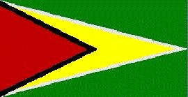
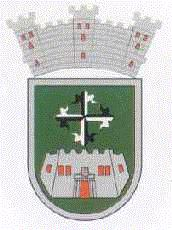

Guyana Francesa
|  |  |
Información general
Nombre oficial: Guayana Francesa
Área: 90 000 km²
División política:Departamento Francés de Ultramar
Unidad monetaria: Francos franceses
Idiomas: Francés (oficial); patois (no oficial)
Gentilicio: Guyanés
Curiosidades
En el puerto de Kourou se ha establecido un centro especial de la Agencia Espacial Europea desde donde es lanzado el cohete Ariane.
La Isla del Diablo fue utilizada como prisión hasta 1937.
Perfil Ecónomico
Perfil Demográfico
Población: 182.333 hab.
Densidad de población: 2 hab/km²
Perfil Cultural
Religión:
- Católicos: 85,8%
- No religiosos: 5,0%
- Protestantes: 4,2%
- Otros: 5,0%
El territorio de Guayana Francesa fue disputado durante siglos por británicos, neerlandeses y portugueses. El Tratado de París, en 1814 concedió a Francia la posesión del territorio.
Sistema de Gobierno
Sistema ejecutivo: Gobierno local a cargo de un prefecto (designado por Francia)
Sistema legislativo: Consejo General (diecinueve miembros) y Consejo Regional (treinta y un miembros), elegidos por sufragio universal por un período de seis años. El departamento tiene un Senador y dos Diputados en la Asamblea Nacional Francesa.
Sistema judicial: Corte de Apelación (radicada en Martinica), tribunales de instancia y de gran instancia.
Aproximación histórica
La Guayana Francesa está situada en la costa noreste de América del Sur, entre Suriname y Brasil. El territorio incluye varias islas entre ellas la célebre Isla del Diablo. Guayana Francesa está cubierta por selvas con una gran riqueza maderera. La altura máxima es 635 m y el río principal el Maroní forma la frontera con Suriname por el oeste y el Oyapock (también llamado Oiapoque en Brasil) define la frontera por el este.
El clima es húmedo, con una fuerte temporada de lluvias entre abril y julio y otra más corta de diciembre a enero.
Los franceses comenzaron a conquistar el territorio en 1804 y recibieron en 1814 mediante el Tratado de París, la posesión del mismo. En 1946 la colonia recibió la condición de Departamento de Ultramar.
«-- ir al comienzo
«-- regresar